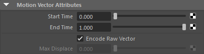
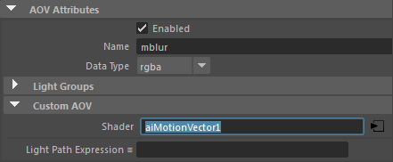
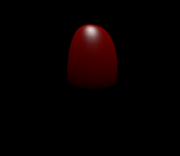
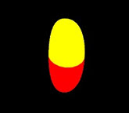
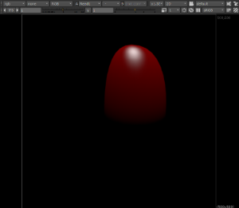
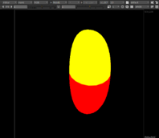
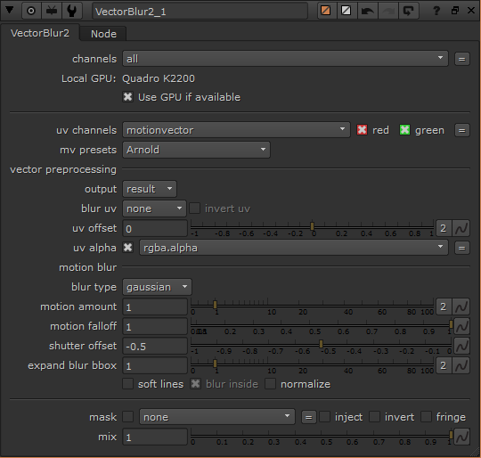
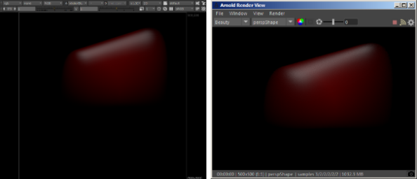

另一种创建运动向量过程的方法是使用自定义 AOV，并将 Ai 运动向量着色器指定给默认的“着色器”(Shader)属性。
信息：有关运动向量的详细信息，请单击此处。
要下载对应的场景文件，请单击此处。
不要将自定义 AOV 命名为“motionvector”，因为它可能会与内置的“motionvector”AOV 发生冲突。

Ai 运动向量着色器。已启用 _Encode_raw_vector_。

aiAOV_mblur
在“运动模糊”(Motion Blur)设置中启用 instantaneous_shutter。这是因为我们不希望渲染中出现运动模糊，但仍想在 motion_vector AOV 中保留运动速度信息。
渲染场景。自定义 AOV mblur 应该在渲染视图窗口中进行渲染。
|  |  |
| 美景 AOV | 自定义运动向量 AOV |
|  |  |
|  |
| Nuke 中的向量模糊节点设置 |
最终输出应该类似下面的左图。相比于使用真实运动模糊渲染的场景，它看起来非常接近。但还是存在一些细微的差异。这是由渲染 2D 运动向量的限制所致。
